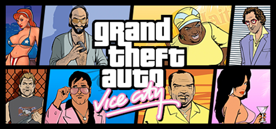

GTA Vice City
Çocukluğumda bu oyuna dair o kadar anı var ki, Gta Vice City için çocukluğumun oyunu desem yeridir. Çocuklar için bu kadar sakıncalı bir oyunun çocukluğumun oyunu olması da ülkedeki denetim kültürünün özeti olabilir.
Ben çocukken şimdikinin aksine açık dünya oyunu sayısı bir elin parmaklarını geçmezdi. O dönem gördüğüm tek açık dünya oyunu Midtown Madness oyunuydu. Onda da sadece araba kullanıyorduk, arabadan inmek mümkün değildi. O oyunu izlerken hep aynı oyunun arabadan inip şehirde dolaşabildiğimiz ve insanlarla etkileşime girebildiğimiz bir versiyonunu hayal ederdim. Gta Vice City’i ilk kez arkadaşımın bilgisayarında gördüğümde bu hayalimin gerçekleştiğini görünce mest oldum. Vice city, eve bilgisayar alındığında oynayacağım oyunlar listesinde birinci sıraya yerleşti. Bir zaman sonra eve bilgisayar alındı. Heyecanla vice city’i kurdum. Fakat hani derler ya, "Sen plan yaparken, tanrı yukarıdan güler." diye. Tam da böyle oldu. Oyun bilgisayarda bir türlü çalışmadı. Tabi o zaman İngilizce yok, bilgisayar bilgisi yok, internet yok. Neden çalışmadığını bir türlü çözemedim. Şimdiki aklımla Directx güncellemesi falan istediğini düşünüyorum ama o zamanlar hiç anlamamıştım. Birkaç gün tarlası yanmış köylü gibi üzgün üzgün oturup sonrasında yine arkadaşlarımı izleyerek Vice City özlemimi gidermeye çalışmıştım. Neyse ki yanlış hatırlamıyorsam birkaç ay sonra oyunu tekrar kurup açtığımda oyun çalıştı. Muhtemelen yüklediğim başka bir oyun Directx’i güncellediği için Vice City sorunumu da çözmüş oldu. Böylelikle muradıma erip oyunu aylarca oynamıştım. Başlarda hiç görev yapmayıp haritada boş boş geziniyordum. Bir süre sonra haritayı avcumun içi gibi bilecek noktaya gelmiştim. Sonrasında canım sıkılınca görevleri yapmaya başlamıştım ve görevler de zevkli gelmişti. Çoğu insan gibi “inşaat patlatma” görevinde takılıp uzun süre ilerleyememiştim. Sonra o görevi zar zor geçince gerisi çorap söküğü gibi geldi. Oyunun ortalarında haritanın da ortasında bulunan büyük bir malikaneye sahip oluyorduk, o malikane çok hoşuma gidiyordu. Malibu Club da göz bebeğimdi. Oyunu bitirdikten sonra haritadaki bazı iş yerlerini satın alıp oraların görevlerini de yapıyorduk. Bir film stüdyosu ve dondurma satıcısı vardı mesela, onların görevlerini yaptığımı hatırlıyorum. Artık dondurma diye ne satıyorduk ya da film diye ne çekiyorlardı bilmiyorum, elçiye zeval olmaz diyelim.
Son olarak aklıma oyunu arkadaşımla oynarken heveslendiğimiz birkaç şey geldi. Oyunda görev yapmadığımız için beş kuruşumuz yoktu ve bir ev sahibi olmayı çok istiyorduk. Hatta oyunun başladığı şehirde havuzlu, garajlı, 2 katlı sarımsı renkte bir villa vardı. O villa hayallerimizi süslüyordu fakat 10 bin dolar falandı. Öyle olunca almamız imkansızdı. Sonrasında “En azından başımızı sokacak küçük bir ev bulalım.” moduna girip böyle bir ev ararken karşı şehirde bir binanın çatısında kulübe gibi bir yer bulmuştuk ve bin dolardı. Görev yapmak istemediğimiz için saatlerce insan dövüp bin dolar topladık ve o kulübeyi aldık. Muhtemelen görev yapsak daha hızlı bir şekilde bin dolar toplardık ama çocuk aklı işte. Oyundaki bir diğer hayalimiz de helikopter bulmaktı fakat bir türlü bulamıyorduk. Şansa bu aldığımız kulübenin hemen karşısındaki binanın çatısında bir polis helikopteri vardı. Onu bulduğumuzda mutluluktan ölecektik.
GTA Vice City Tanıtım Videoları: